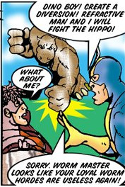

Hello friends.
We all know about The Hippo, Sentinel Comics’s burliest animal-themed, steroid-using nemesis of the Savage Haka.

Yet, it appears that Eddie Wagner is not the only supervillain to go by the moniker of “The Hippo.” Coincidentally, it seems that, in 2003, Australian physicist David Morgan-Mar published a strip of his webcomic, Irregular Webcomic!,* featuring another supervillain called “The Hippo.” Observe:

Other appearances of Morgan-Mar’s Hippo include here, here, and here. His bio and portrait can be found here.
Now, I’m not accusing C&A of stealing anybody’s intellectual property. I’m sure this is all just a coincidence. I just thought I should show y’all this.
* Tangentially, I highly recommend Irregular Webcomic to any webcomic-readers out there. It has content on many different topics, including but not limited to LEGOⓇ©™, tabletop RPGs, Star Wars, and Indiana Jones. See here for more information.